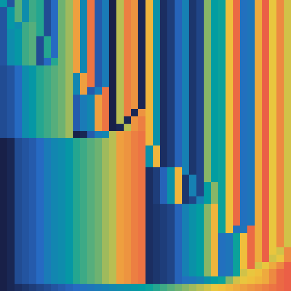
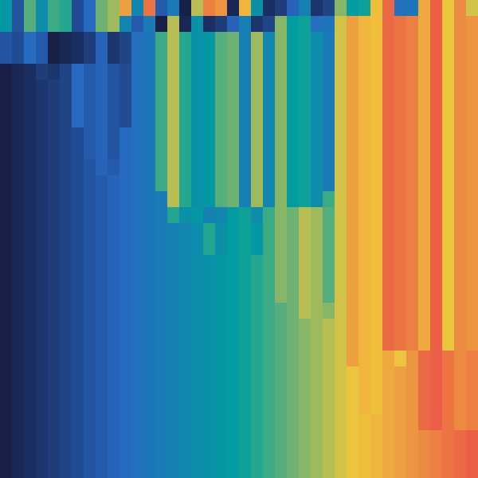
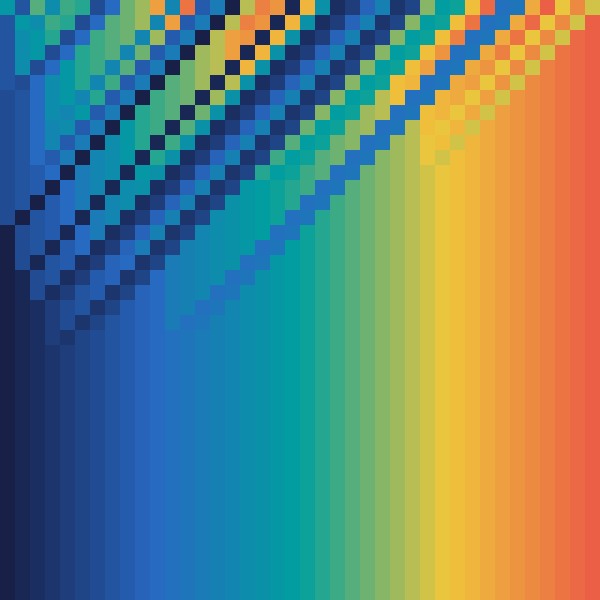

IntercalaçãoJohn von Neumann, 1945Python sobre 40 inteiros embaralhados, 39 intercalaçõesO(n log n) comparações
O(n) de memória

RápidaTony Hoare, 1959Python sobre 40 inteiros embaralhados, 29 partiçõesO(n log n) em média
O(log n) de memória

Bolhaautoria incerta, anos 1950Python sobre 40 inteiros embaralhados, 39 passadasO(n²) comparações
O(1) de memória